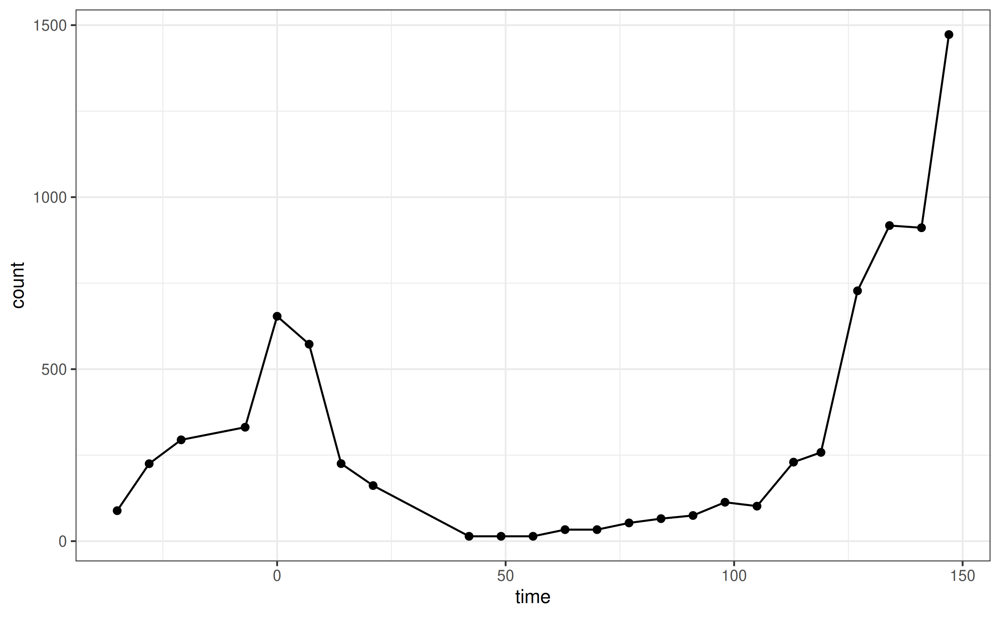
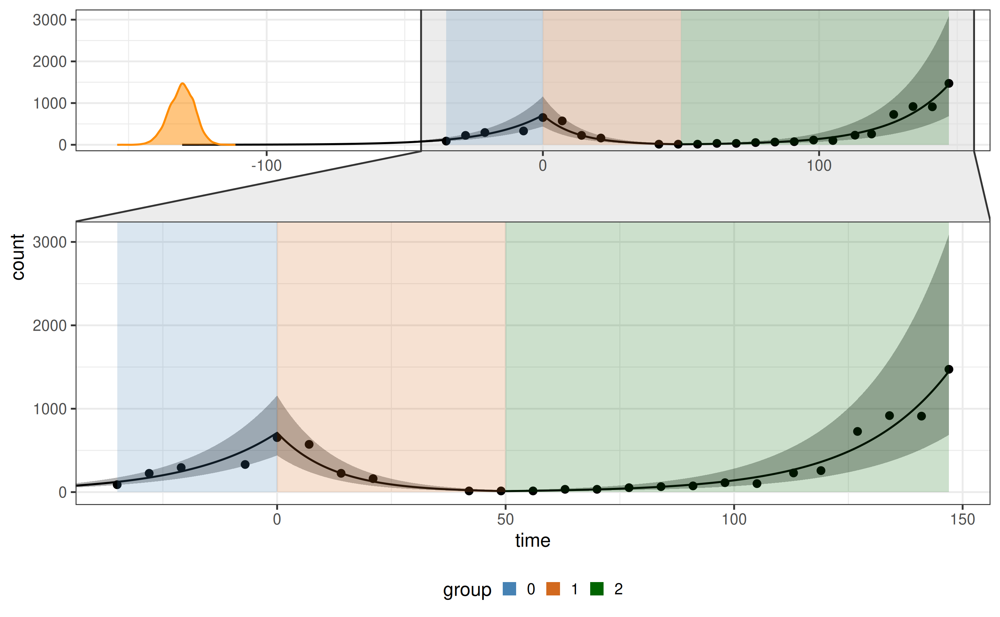
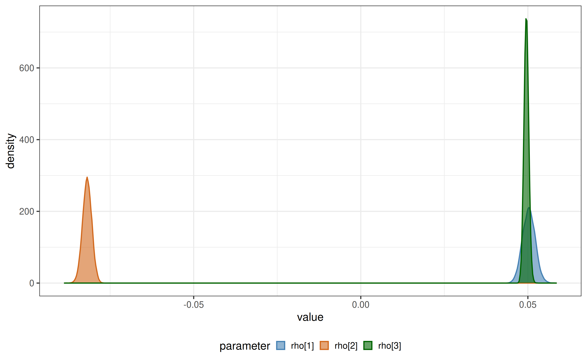
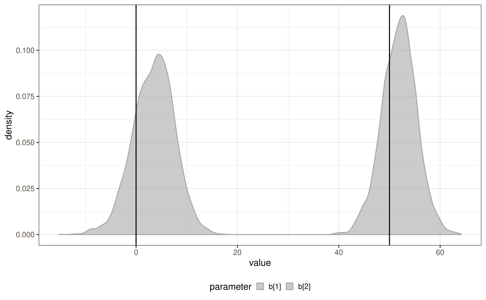

Get started
biPOD.Rmd
# install.packages("devtools")
# devtools::install_github("caravagnalab/biPOD")
library(biPOD)
require(dplyr)
set.seed(1)What is biPOD?
biPOD is an R package for model-based Bayesian inference of population dynamics from heterogeneous longitudinal data. It supports: (i) fitting growth with known breakpoints, (ii) inferring breakpoints when unknown, and (iii) a two-population (sensitive/resistant) model typical in treatment–relapse settings.
1) Quick tour with the built-in dataset
The package ships the xenografts mouse model
dataset:
We initialize a bipod object and plot inputs:
mouse_id = 544
df = xenografts %>%
dplyr::filter(mouse == mouse_id) %>%
dplyr::mutate(count = tumour_volume)
x <- init(counts = df, sample = unique(df$mouse), break_points = NULL)
plot_input(x)
Fit with known breakpoints
Suppose change-points (e.g., treatment start and end) are known:
x <- biPOD::init(
counts = df,
sample = mouse_id,
break_points = c(0, 50)
)
x <- biPOD::fit(
x = x,
growth_type = "exponential",
infer_t0 = T
)
plot_fit(x)
plot_posteriors(x = x, x_fit = x$fit, par_list = c("rho[1]", "rho[2]", "rho[3]")) # posterior densities for parameters
Infer breakpoints
When transition times are unknown, estimate them directly from the data:
x <- biPOD::init(
counts = df,
sample = mouse_id,
break_points = NULL
)
x <- biPOD::fit_breakpoints(x = x, available_changepoints = 0:2, n_core = 1)
plot_breakpoints_posterior(x) + ggplot2::geom_vline(xintercept = c(0, 50))